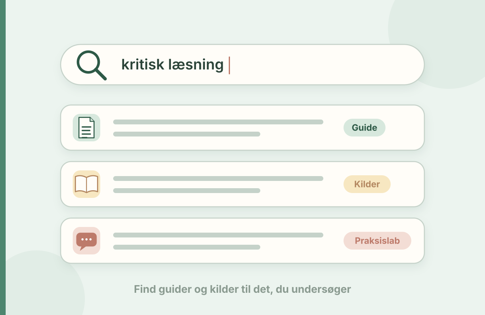

Find indhold
Søg i Læseblik
Find faglige analyser og guides, cases, aktiviteter, studieveje og materialer. Søg på et emne eller en opgave, du arbejder med.

Find faglige analyser og guides, cases, aktiviteter, studieveje og materialer. Søg på et emne eller en opgave, du arbejder med.
